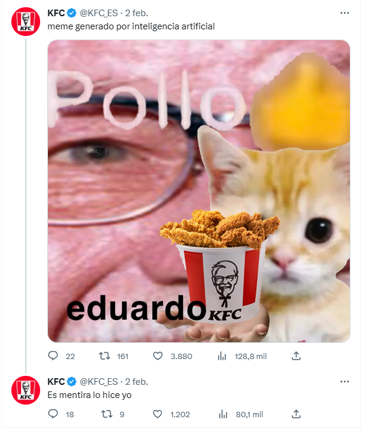

La Historia de los Memes:Transmitiendo Risas a Través del Tiempo
Los memes, esas pequeñas joyas de humor digital que inundan nuestras redes sociales y conversaciones en línea, tienen una historia fascinante que se remonta a los primeros días de internet. Estos elementos virales han evolucionado desde simples imágenes con texto hasta formatos multimedia complejos, y su impacto en la cultura moderna es innegable.
La era de los memes comenzó en la década de 2000, cuando foros y comunidades en línea se convirtieron en el patio de recreo para usuarios creativos que compartían imágenes graciosas y bromas visuales. Un hito temprano es el famoso "Dancing Baby" o "Baby Cha-Cha-Cha", un GIF animado que se volvió viral en 1996 y marcó el inicio de la cultura de internet.
 |
|
Encima uno de los primeros memes en internet. (1996) |
Un poco más sobre los memes:
Con el tiempo, plataformas como 4chan, Reddit y otros foros se convirtieron en semilleros de memes. Imágenes como "LOLcats" y "Rickrolling" se propagaron rápidamente, y los usuarios comenzaron a experimentar con la creación de macros de imágenes y videos que combinaban humor y referencias culturales.
El surgimiento de las redes sociales, especialmente con el auge de Facebook y Twitter, llevó a una explosión de memes que alcanzaron una audiencia global. Las personas comenzaron a compartir memes como una forma rápida y efectiva de comunicar ideas, emociones o simplemente para hacer reír a otros.
Los memes también han influido en la publicidad, la política y la comunicación visual. Los memes han demostrado su capacidad para ser una forma de expresión cultural, social y política.
|  |
|
Aquí se ve como los memes toman parte del marketing hoy en día. |
Memes en Evolución: Risas y Reflexiones en la Cultura Digital Actual
En la actualidad, los memes siguen siendo una parte integral de la experiencia en línea. Nuevas tendencias surgen constantemente, y las plataformas como Instagram, TikTok y Snapchat continúan siendo terrenos fértiles para la creatividad meme. A medida que la tecnología avanza, es seguro decir que la historia de los memes seguirá evolucionando, dejándonos con risas, reflexiones y una ventana única a la cultura digital.